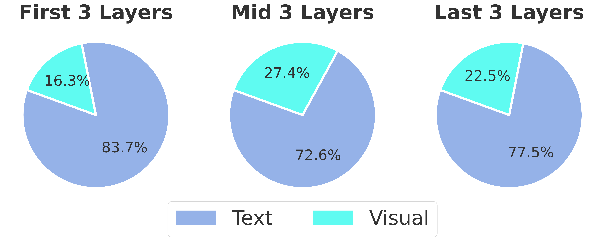

Example of Multimodal Citation Tasks

The model takes multimodal corpus and generates responses with explicit citations.
In this paper, we introduce MCiteBench, the first benchmark designed to assess the ability of MLLMs to generate text with citations in multimodal contexts. Our benchmark comprises data derived from academic papers and review-rebuttal interactions, featuring diverse information sources and multimodal content. Experimental results reveal that MLLMs struggle to ground their outputs reliably when handling multimodal input. Further analysis uncovers a systematic modality bias and reveals how models internally rely on different sources when generating citations, offering insights into model behavior and guiding future directions for multimodal citation tasks.
The model takes multimodal corpus and generates responses with explicit citations.

Generating text with citation can be abstracted into a two-stage process:
We analyze model performance in instances where the evidence modality comes from mixed modalities. Most models achieve high Source EM scores when the ground truth evidence is textual but perform poorly when it is visual. This suggests that although MLLMs can process multimodal inputs, they are better at aligning with textual evidence than accurately citing visual information when generating responses.
Using Qwen2-VL-7B as the test model, we calculate the attention distribution across multimodal inputs by averaging attention head scores and normalizing by input source token length across different layers. While the model processes all modalities, it prioritizes textual content and utilizes it more effectively than visual data.

@article{hu2025mcitebench,
title={MCiteBench: A Benchmark for Multimodal Citation Text Generation in MLLMs},
author={Hu, Caiyu and Zhang, Yikai and Zhu, Tinghui and Ye, Yiwei and Xiao, Yanghua},
journal={arXiv preprint arXiv:2503.02589},
year={2025}
}